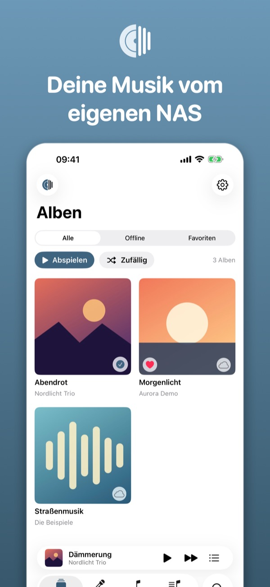
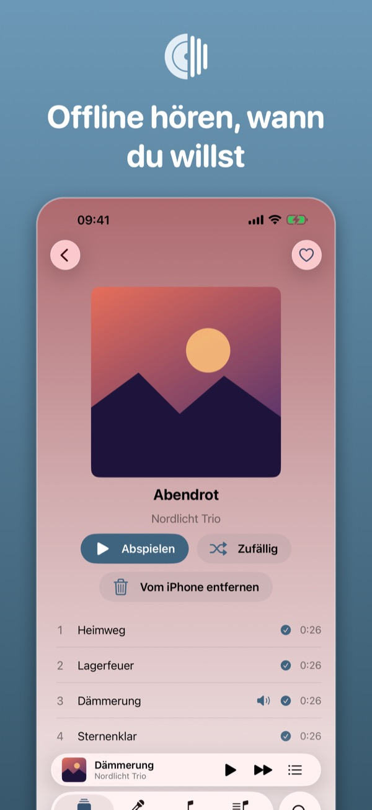
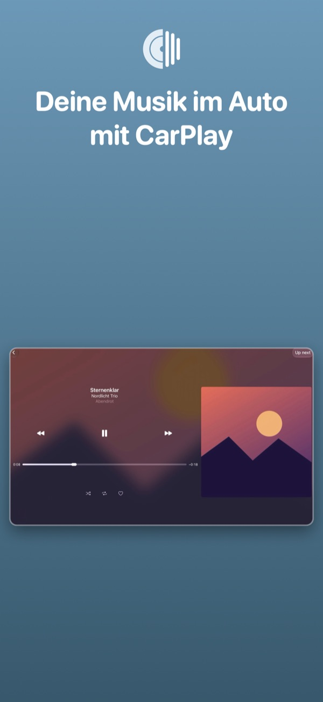
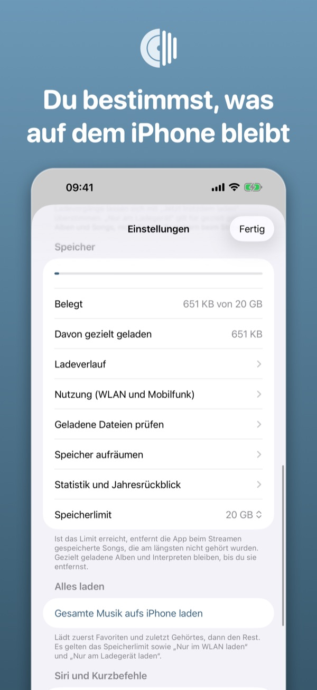
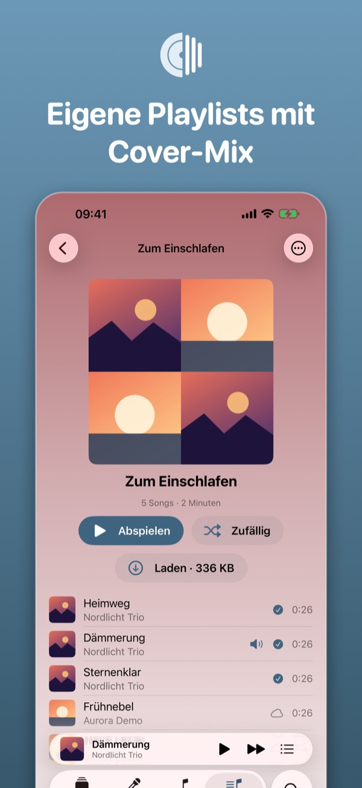
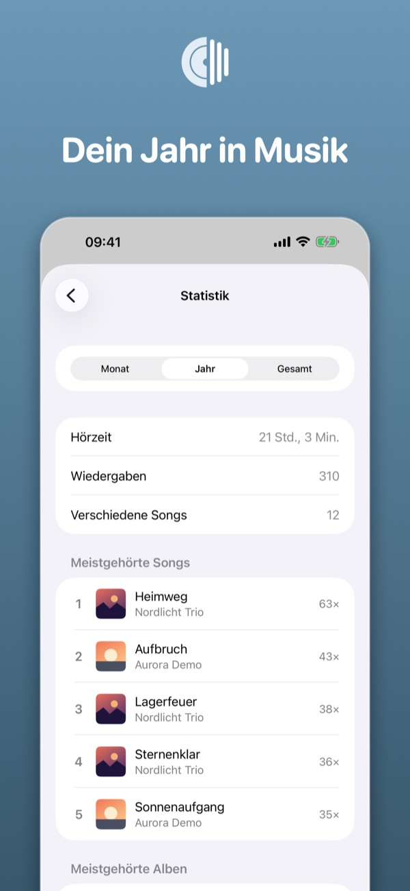
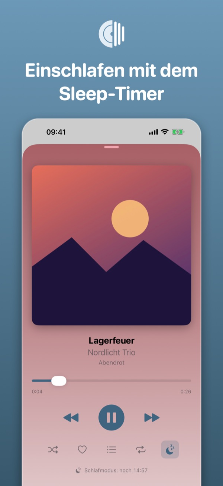

Deine Musik. Von deinem NAS.
NAS Player spielt die Musiksammlung (MP3 und M4A) von deinem Synology-NAS mit Audio Station auf iPhone und iPad ab: streamen, Alben und Interpreten zum Offline-Hören auf das iPhone laden, Favoriten merken und die Musik auch ohne Netz hören.
- Kostenlos
- Ohne Werbung
- Ohne Tracking
- iPhone, iPad und CarPlay







Das kann die App
Streamen
Gesamte Bibliothek durchsuchen und streamen, ohne alles herunterzuladen
Offline hören
Alben, Interpreten und Songs gezielt auf das iPhone laden (mit Größenanzeige und Speicherlimit)
CarPlay
CarPlay mit Home, Raster, Playlists und Hinweis ohne Netz
Siri
Siri und Kurzbefehle: „Spiele meine Favoriten mit NAS Player“ (alle Befehle)
Favoriten und Listen
Favoriten, Wiedergabeliste, Zufall und Wiederholen; Genres und mehrteilige Alben
Ohne NAS testen
Demo-Modus mit Beispielmusik, ganz ohne NAS
Privat
Keine Werbung, kein Tracking, keine Konten
Und mehr
Favoriten mit dem NAS abgleichen (optional), AirPlay, Songtexte und Geschwindigkeit für Hörbücher
Voraussetzung
Ein Synology-NAS mit Audio Station, das über eine https-Adresse mit gültigem Zertifikat oder über QuickConnect erreichbar ist. Ohne NAS kannst du die App im Demo-Modus ausprobieren.
Anleitungen
Fragen und Feedback
Siehe Support.